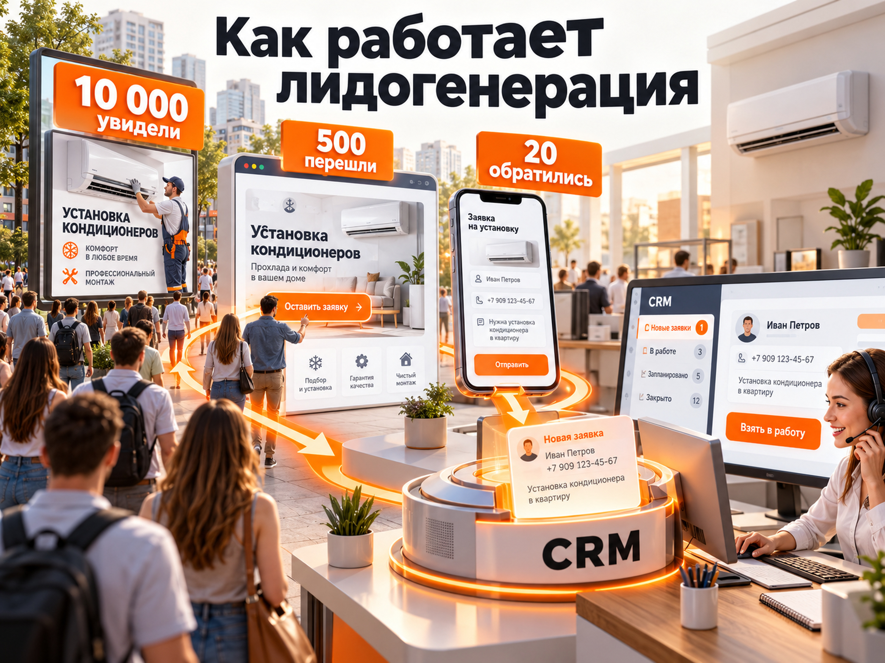
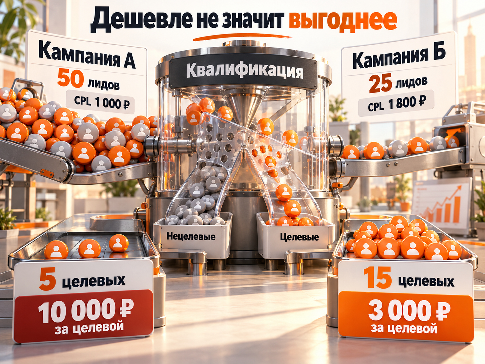

Блог о платном трафике
Лидогенерация: что это такое простыми словами и как работает
Лидогенерация - это привлечение потенциальных клиентов, которые проявили интерес к товару или услуге и сделали шаг к общению с бизнесом: отправили заявку, позвонили, написали в мессенджер или запросили расчёт стоимости. Такое обращение называется лидом.
Задача лидогенерации - не просто увеличить посещаемость сайта, а получить обращения, с которыми можно работать дальше. При этом лид ещё не означает продажу: человек может не подходить по бюджету, передумать или вообще оставить ошибочные контакты. Поэтому качество и итоговая стоимость привлечения клиента важнее голого количества заявок.
Что такое лидогенерация простыми словами
Представим компанию, которая устанавливает кондиционеры. В условном примере рекламу увидели 10 000 человек, 500 перешли на сайт, а 20 позвонили или оставили заявку. Эти 20 обращений - лиды. Конверсия переходов в обращения составила 20 / 500 × 100% = 4%.
Здесь важно различать три результата:
- Охват или показы - предложение увидели потенциальные покупатели.
- Трафик - часть людей перешла на сайт или другую площадку.
- Лиды - люди совершили действие, после которого компания может продолжить разговор.
Дальше менеджер выясняет потребность, предлагает решение и ведёт клиента к покупке. Получение обращения относится к лидогенерации, а заключение сделки - уже к продажам, хотя для общей эффективности обе части необходимо оценивать вместе.

Сам по себе большой поток посетителей ничего не гарантирует. Если предложение не соответствует запросу, цена не подходит или форма неудобна, переходы могут не превращаться в заявки.
Кто такой лид и чем он отличается от клиента
Лид - потенциальный клиент, который оставил обращение или контакт, позволяющий продолжить предметное общение. Определение должно быть единым для маркетинга, аналитики и отдела продаж.
В зависимости от бизнеса лидом могут быть отправленная форма, телефонный звонок по услуге, осмысленное сообщение в мессенджере, запрос коммерческого предложения, запись на консультацию или заказ обратного звонка.
При этом не всякое действие на сайте является лидом. Просмотр страницы, нажатие кнопки без отправки контактов и время на сайте - это поведенческие сигналы или микроконверсии. Подписку на рассылку тоже не стоит автоматически приравнивать к запросу на покупку.
| Понятие | Что означает | Пример |
|---|---|---|
| Посетитель | Увидел предложение или открыл страницу | Читает описание установки кондиционера |
| Лид | Обратился с потенциальным интересом | Попросил расчёт монтажа |
| Квалифицированный лид | После проверки подходит компании по заданным критериям | Нужна подходящая услуга в обслуживаемом регионе |
| Клиент | Совершил покупку | Оплатил установку |
| Продажа | Результат сделки, фиксируемый по правилам компании | Получена оплата за заказ |
Пример квалификации. Строительная компания получила 30 обращений. У 10 людей запрос оказался не по профилю компании, ещё 8 пока только изучали цены, а 12 подошли по задаче и бюджету. Всего лидов было 30, а квалифицированных - 12. Оставшиеся 8 не обязательно бесполезны: их можно сохранить для дальнейшей коммуникации, но смешивать со сформированным спросом нельзя.
Подробнее о критериях проверки заявок: Квалификация лидов в продажах.
Как работает лидогенерация
Лидогенерация состоит из связанных действий, и сбой на любом из них влияет на результат.
1. Поиск целевой аудитории
Компания определяет, кому нужен продукт и где эти люди ищут информацию: на поиске Яндекса, в тематических сообществах, на Авито, в статьях или по рекомендациям.
2. Предложение и посадочная площадка
Пользователь видит рекламу, открывает страницу или карточку объявления. Он должен быстро понять, что предлагается, для кого, на каких условиях и что произойдёт после обращения. Посадочной площадкой может быть сайт, лид-форма, карточка товара или переписка.
3. Получение обращения
Человек оставляет заявку, звонит, пишет менеджеру или запрашивает расчёт. Для корректного учёта заранее определяют, какие действия считать лидами, а какие - предварительными сигналами интереса.
4. Фиксация и передача в работу
Обращение попадает в уведомление или CRM. Желательно сохранять источник, дату, контакт, суть запроса и ответственного сотрудника. Повторные обращения одного человека нужно отличать от новых уникальных лидов.
5. Квалификация и продажа
Менеджер уточняет потребность, бюджет, регион и сроки, если эти параметры действительно важны для бизнеса. Далее заявка может перейти в переговоры, продажу, отложенный спрос или отказ.
Именно на последнем этапе становится понятно, какие лиды имеют коммерческую ценность. Поэтому оценивать рекламу только по отправленным формам недостаточно.
Основные каналы лидогенерации
Лиды можно привлекать из разных источников. Канал стоит выбирать по характеру спроса, длительности сделки, бюджету и способности бизнеса обрабатывать обращения.
| Канал | Когда особенно полезен | Что важно учитывать |
|---|---|---|
| Яндекс Директ, поиск | Человек уже ищет товар или услугу | Цена клика, конкретность запроса, качество посадочной страницы |
| РСЯ | Нужно дополнительно охватывать аудиторию и возвращать заинтересованных | Интерес к объявлению не всегда означает готовность купить |
| SEO | Спрос регулярно выражается в поисковых запросах | Работа с контентом и сайтом требует времени и ресурсов |
| Авито и тематические площадки | Люди выбирают предложения в каталогах или объявлениях | Разные категории дают разное качество контактов |
| Соцсети и мессенджеры | Есть сообщества, аудитории и сценарии общения | Подписчик, просмотр и заявка - разные события |
| Контент и собственная аудитория | Продукт сложный, решение требует доверия и объяснений | Часть обращений появляется не сразу после публикации |
Яндекс Директ. На поиске пользователь уже формулирует потребность, а в РСЯ рекламу могут увидеть люди, которые пока только знакомятся с предложением. Для разных типов трафика разумно отдельно смотреть долю целевых обращений.
SEO. Информационные статьи и коммерческие страницы помогают находить бизнес через Яндекс и Google. Переходы из органической выдачи не оплачиваются за каждый клик, но создание и поддержка страниц требуют затрат.
Авито, соцсети и контент. Обращение может поступить прямо из объявления, сообщества, Telegram, MAX или другой площадки. Важно учитывать именно предметные контакты с потенциальными покупателями, а не всех подписчиков и посетителей.
Когда нужен лид-магнит
Лид-магнит - полезный материал или действие в обмен на контакт: например, чек-лист, консультация, каталог или предварительный расчёт. Он помогает начать общение с аудиторией, которая пока не готова к покупке. Но скачивание материала и запрос коммерческого предложения отражают разную степень готовности. В CRM их лучше различать.
Как настроить лидогенерацию с нуля
Рабочий запуск начинается с экономики и организации обработки заявок, а не с выбора рекламного кабинета.
- Определить целевого клиента. Зафиксировать продукт, регион, тип покупателя и критерии заявки. Например, для производственной компании важны вид продукции, минимальный объём и география поставки.
- Сформулировать предложение. Показать конкретную пользу, условия, ограничения и следующий шаг. Если клиенту нужен расчёт, предложить запросить расчёт, а не просто «оставить контакты».
- Выбрать первый канал. Опираться на существующий спрос: поиск для готового запроса, профильная площадка для выбора исполнителя, контент для сложного продукта. Не запускать много источников только ради охвата.
- Подготовить точку обращения. Проверить сайт, форму, телефоны, сообщения и мобильную версию. Отправить тестовую заявку самостоятельно.
- Настроить учёт. Заранее определить лид, квалифицированный лид, продажу; передавать заявки в CRM, сохранять источник и фиксировать дубли.
- Запустить и проверить путь заявки. Убедиться, что обращение попадает нужному сотруднику, он отвечает, а статус меняется после разговора.
- Оптимизировать по качеству. Сравнивать источники по доле подходящих обращений и продажам, а не только по CPL.
Для рекламы без собственного сайта есть отдельный разбор: Яндекс Директ без сайта.
Сколько стоит лид и как рассчитать CPL
CPL (Cost Per Lead) - стоимость одного полученного лида за выбранный период.
CPL = расходы на привлечение / количество лидов.
Условный пример: реклама обошлась в 60 000 ₽ и принесла 30 заявок. CPL = 60 000 / 30 = 2000 ₽ за лид.
Для сравнения кампаний важно считать одинаковые обращения и одинаковый состав расходов. Если в одной кампании учитывать каждый звонок, а в другой только подтверждённые заявки, их CPL нельзя корректно сопоставить.
Как определить допустимую цену заявки
Низкий CPL не является самостоятельной целью. Предельную стоимость лида полезно выводить из того, сколько бизнес может потратить на привлечение покупателя.
Допустимый CPL = допустимые расходы на рекламу для получения одной продажи × конверсия лидов в продажи.
Условный расчёт: компания может позволить себе потратить на рекламу 8000 ₽ на одного покупателя, а 25% лидов превращаются в продажи. Тогда допустимый CPL = 8000 × 0,25 = 2000 ₽. При более низкой конверсии допустимая цена заявки тоже снижается.
Это модель с заданными допущениями, а не среднерыночная стоимость лида. Она учитывает только заданный рекламный лимит. Если бизнес считает полный CAC, нужно дополнительно включать применимые затраты на маркетинг и продажи.
Для самостоятельной проверки расчёта есть калькулятор стоимости лида. Разницу с CPA разбираю в материале CPA в Яндекс Директе.
Почему дешёвые лиды не всегда выгодны
Часть дешёвых обращений может оказаться нерелевантной. Сравним две условные рекламные кампании из исходного примера.
| Показатель | Кампания А | Кампания Б |
|---|---|---|
| Расходы на рекламу | 50 000 ₽ | 45 000 ₽ |
| Все лиды | 50 | 25 |
| CPL | 1000 ₽ | 1800 ₽ |
| Квалифицированные лиды | 5 | 15 |
| Доля квалифицированных | 10% | 60% |
| Стоимость квалифицированного лида | 10 000 ₽ | 3000 ₽ |
У первой кампании CPL ниже, но на один подходящий запрос уходит 10 000 ₽. У второй обычная заявка дороже, зато подходящий лид обходится в 3000 ₽.

Вывод: по стоимости *квалифицированного лида* кампания Б эффективнее. Но для окончательного вывода об окупаемости ещё нужны данные о продажах, чеке, марже и расходах. Нельзя автоматически объявлять более качественную по заявкам кампанию более прибыльной.
Разбор причин слабых обращений: Некачественные лиды из Яндекс Директа.
Как оценивать эффективность лидогенерации
Оценка должна охватывать путь от обращения до денег. Для этого полезно регулярно смотреть несколько уровней.
| Показатель | Формула или смысл | Что показывает |
|---|---|---|
| Количество лидов | Число уникальных обращений по согласованным правилам | Объём полученного спроса |
| CPL | Расходы / лиды | Цена одного обращения |
| Доля квалифицированных | Квалифицированные лиды / все лиды × 100% | Насколько обращения соответствуют целевому клиенту |
| Стоимость квалифицированного лида | Расходы / квалифицированные лиды | Цена подходящего обращения |
| Конверсия лида в продажу | Продажи / лиды × 100% | Сколько обращений стали покупками |
| Рекламная стоимость продажи | Расходы на рекламу / продажи | Сколько рекламы приходится на покупателя |
| CAC | Применимые затраты на привлечение / новых клиентов | Полная стоимость привлечения клиента при согласованном составе затрат |
Для длинных сделок важно сравнивать показатели с учётом времени: сегодняшние заявки могут закрыться через несколько недель или месяцев. Если брать свежие обращения и старые продажи, конверсия получится некорректной.
В B2B, недвижимости, строительстве и других нишах с дополнительной квалификацией обычного CPL недостаточно. Сначала стоит определить, что отдел продаж считает подходящим обращением, а затем считать стоимость именно таких лидов.
Подробнее: Конверсия лида в продажу и Стоимость привлечения клиента (CAC).
Почему лиды не превращаются в продажи
Если заявок много, а договоров или оплат мало, причину нужно искать по этапам, а не автоматически обвинять рекламный канал или отдел продаж.
| Симптом | Что проверить | Что сделать |
|---|---|---|
| Много обращений не по профилю | Запросы, аудитории, посадочную страницу, описания продукта | Уточнить условия предложения и настройки привлечения |
| Люди не отвечают | Корректность контактов, дубли, спам, время первого ответа | Отделить мусорные заявки и наладить своевременный контакт |
| Лиды подходят, но не покупают | Причины отказов, цену, сроки, работу менеджера | Разобрать этап переговоров и предложения, а не только рекламу |
| Реклама даёт заявки, но источник продаж неизвестен | Передачу UTM-меток, звонков и статусов в CRM | Связать каждую сделку с исходным обращением, когда это возможно |
| Конверсий в отчёте больше, чем реальных клиентов | Повторные отправки, звонки одного человека, события кнопок вместо лидов | Настроить единые правила уникальности и учёта |
Одна и та же проблема может иметь несколько причин. Например, низкая конверсия в продажу бывает следствием нецелевого трафика, слабого предложения или медленной обработки. Надёжный вывод возможен только после проверки конкретных заявок и их статусов.
Как связать заявки, CRM и продажи
CRM нужна не ради самой программы, а ради прослеживаемости результата: от первого обращения до квалификации, переговоров и оплаты. Даже простая система учёта с понятными статусами полезнее отчёта, в котором есть только количество форм.
Для каждой заявки желательно сохранять источник, дату поступления, контакт, предмет запроса, ответственного сотрудника и актуальный статус. Удобные рабочие статусы: новая, в работе, квалифицирована, нецелевая, отложена, сделка заключена, оплачена, отказ. Конкретный набор зависит от процесса продаж.
После разговора сотрудник отмечает, подошёл ли клиент по потребности, бюджету и другим существенным требованиям. Так маркетинг может сравнить не просто количество звонков, а качество обращений из разных источников. При этом квалифицированный лид не равен оплаченной сделке.
Информация должна возвращаться из продаж в аналитику. Например, по источникам можно увидеть, какие кампании приводят подходящие заявки и какие из них доходят до оплаты. Если подключена передача данных из CRM в Яндекс Метрику, статусы заказов и продажи можно использовать в отчётах; при корректной привязке данных к визитам доступны соответствующие цели для анализа и настройки кампаний в Директе. Передача сама по себе не гарантирует привязку каждого заказа, поэтому качество сопоставления необходимо проверять.
Принципиально важно не путать зоны ответственности. Реклама отвечает за привлечение и качество входящего спроса, отдел продаж - за работу с обращениями. Общий результат зависит от обеих частей и от самого продукта, цены и условий.
Для углубления темы: Офлайн-конверсии в Яндекс Директе и Сквозная аналитика Яндекс Директа.
Частые вопросы о лидогенерации
Можно ли получать лиды без сайта?
Да. Обращения могут поступать из лид-форм, Авито, сообщений в мессенджерах, каталогов и других площадок. Но и без сайта нужно фиксировать источник, сам запрос и результат обработки. Иначе оценивать рекламу будет сложно.
Как считать повторные заявки одного человека?
Зависит от принятой методики. Для оценки уникальных потенциальных клиентов повторный звонок и повторную форму от одного человека обычно объединяют. При этом отдельный новый запрос или покупку позже можно учитывать как новое событие. Правило должно быть одинаковым для всех источников и периодов.
Что делать, если часть заявок пока не готова к покупке?
Разделять нецелевые обращения и отложенный спрос. Человек, который выбирает подрядчика на следующий сезон, может подходить компании, но не быть готовым к сделке сейчас. Его статус и дальнейшую работу с ним нужно учитывать отдельно.
Главное о лидогенерации
Лидогенерация - это организация получения обращений из рекламы, поиска, площадок и контента. Её практический результат - не абстрактный охват, а контакт с потенциальным клиентом, которому можно предложить продукт.
Хорошая лидогенерация измеряется всей цепочкой: сколько лидов получено, какая часть подходит бизнесу, сколько стоят подходящие обращения и сколько из них заканчиваются продажами. Чем лучше связаны рекламная аналитика, CRM и обработка заявок, тем точнее можно распределять бюджет и устранять реальные причины потерь.